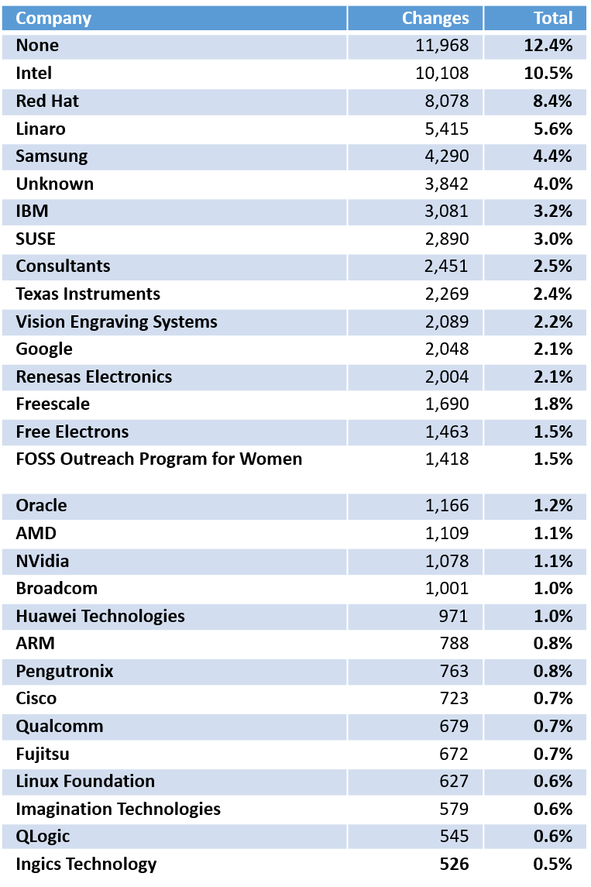

Тут я не буду многословен, и просто приведу, полагаю, вполне понятную таблицу, составлением которой занималась .
Из этой таблицы видно, что как и пару десятков лет назад, над ней по-прежнему трудится довольно большое колчиство обычных людей, хотя и год за годом их процент снижается. Но за ними сразу идут компании-гиганты, которые тратят на разработку линукса свои собственные средства и получая выгоду с вложенных средств.
А такое большое кол-во компании занимаются разработкой, потому что мир вовсе не крутится вокруг Windows. Он крутится, как-раз таки, вокруг линукса, ведь он используется практически везде. От управления роутером, в которых стоит минималистичное ядро линукса (ddwrt – точно) до управления ЦОДами, Суперкомпьютерами, NASA и правительство США использует его в качестве своих серверов или просто для управления чем-либо, даже на МКС стоит линукс.
Совокупная себестоимость ядра Linux оценена в более чем 1 млрд евро (около 1,4 млрд долл.). Только за 2008 год себестоимость ядра Linux увеличилась на 225 млн евро. В системе Linux воплощён труд в эквиваленте (вы просто представьте себе эту цифру) 73 тыс. человеко-лет!.
В настоящее время системы Linux лидирует на рынках смартфонов (Android занимает 85 % рынка), интернет-серверов (60 %), самых мощных суперкомпьютеров (97 %), а также, согласно Linux Foundation, в дата-центрах и на предприятиях, занимают половину рынка встраиваемых систем, имеют значительную долю рынка нетбуков (32 % на 2009 год). На рынке домашних компьютеров Linux прочно занимает 3 место. Согласно исследованию Goldman Sachs, в целом, рыночная доля Linux среди электронных устройств составляет около 42 %.
Надеюсь, у читателя уже не возникает вопросов зачем Linux нужен, где используется и почему. Конечно, мой реферат не является исчерпывающим, за дополнительными данными Вы всегда можете обратиться к гуглу. Но осталось совсем немного - одна глава. И эта глава посвящена влиянию OpenSource сообществ, вдохновленные именно линуксом (спасибо, Торвальдс!), на ИТ.